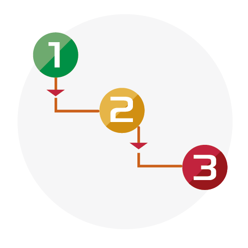

<ion-header class="ion-no-border">
  <ion-toolbar color="blue">
    <ion-buttons slot="start">
      <ion-back-button defaultHref="/tabs/tab2"></ion-back-button>
    </ion-buttons>
    <ion-title class="ion-text-center">II. Identificación de peligros y riesgos ambientales</ion-title>
    <ion-card-subtitle class="ion-text-center">{{DataEstacion.nombre}}</ion-card-subtitle>
  </ion-toolbar>
  <hr class="linea">
</ion-header>

<ion-content>
  <ion-grid fixed>
    <ion-row>
      <ion-col size="12" sizeMd="6" sizeLg="4">
        <ion-card class="carta">
          
          <ion-card-header>
            <ion-card-title class="ion-text-center">Procedimiento</ion-card-title>
          </ion-card-header>
        </ion-card>
      </ion-col>
      <ion-col size="12" sizeMd="6" sizeLg="4">
        <ion-card (click)="riesgos()" class="carta">
          
          <ion-card-header>
            <ion-card-title class="ion-text-center">Riesgos</ion-card-title>
          </ion-card-header>
        </ion-card>
      </ion-col>
      <ion-col size="12" sizeMd="6" sizeLg="4">
        <ion-card (click)="aspectosAmbientales()" class="carta">
          
          <ion-card-header>
            <ion-card-title class="ion-text-center">Aspectos Ambientales</ion-card-title>
          </ion-card-header>
        </ion-card>
      </ion-col>
    </ion-row>
  </ion-grid>
</ion-content>
